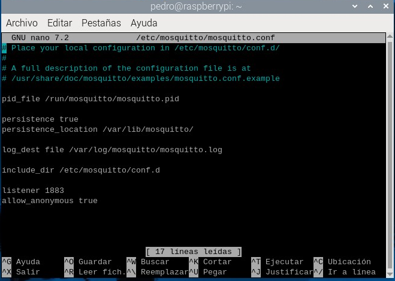
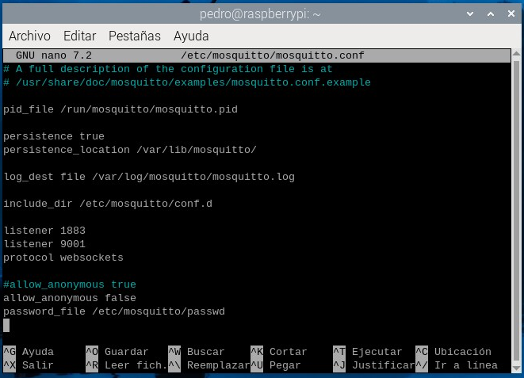

El servidor de mqtt lo vamos a instalar en una raspberry pi, en concreto se llama mosquitto, lo he realizado siguiendo minuciosamente los pasos explicados en la web de Luis Llamas. https://www.luisllamas.es/como-instalar-mosquitto-el-broker-mqtt/.
Instalación de Mosquitto
Para ello en un terminal de raspberry os:
sudo apt update
sudo apt upgrade
Con estás órdenes actualizamos la base de datos de paquetería.
sudo apt install mosquitto mosquitto-clients
Ahora instalamos el servidor y las herramientas de cliente.
Para verificar el estado del servidor puedes usar la siguiente orden;
sudo systemctl status mosquitto
Configuración del servidor
Además hay que modificar el archivo de configuración de mosquitto, en mi caso con el editor de texto nano:

Al mismo añadimos las líneas:
listener 1883
allow_anonymous true

Esto permite al servidor atender al puerto 1883 (el de mqtt) y permitir el uso del mismo a usuarios anónimos.
Configuración de mosquitto para autenticación
También podemos añadir al servidor usuarios y contraseñas, e incluso no permitir el uso a usuarios anónimos (sin identificación).
En la web de GIRNI lo explican con detalle.
Debemos añadir en el fichero de configuración mosquitto.conf :
allow_anonymous false
password_file /etc/mosquitto/passwd
y comentar para que no tenga efecto la línea:
#allow_anonymous true
La primera línea no permite usuarios anónimos y las segunda indica dónde está el fichero de usuarios y contraseñas cifradas.
El fichero de configuración quedaría de la siguiente manera:

También hemos añadido las líneas:
listener 9001
protocol websockets
La primera hace que el servidor pueda escuchar peticiones por el puerto 9001 y la segunda habilita el protocolo websockets, este protocolo con su puerto (9001) permiten que páginas webs se puedan comunicar con servidores mqtt. En el router habrá que abrir el puerto 9001 y redireccionarlo a la ip local de la raspberry pi.
Para añadir el fichero de usuarios y contraseñas y el primer usuario:
sudo mosquitto_passwd -c /etc/mosquitto/passwd usuario
con la opción -c crea el fichero y borra el anterior si lo hubiese.
para la creación los demas usuarios sin la opción -c:
sudo mosquitto_passwd /etc/mosquitto/passwd nuevousuario
Para comprobar los usuarios del servidor mosquitto usamos:
cut -d: -f1 /etc/mosquitto/passwd